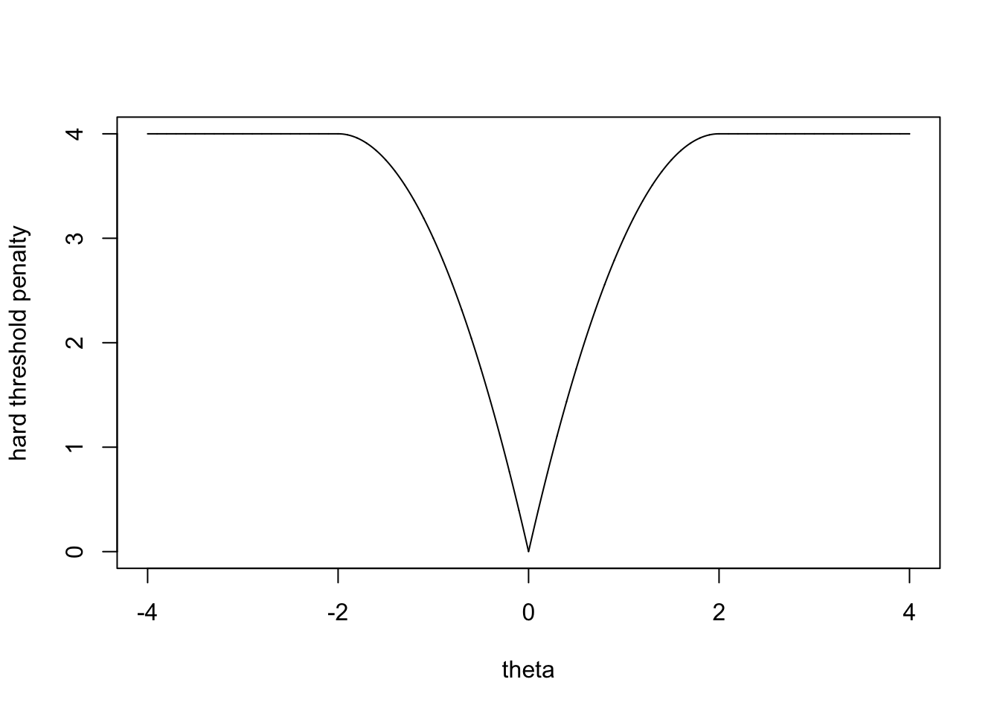
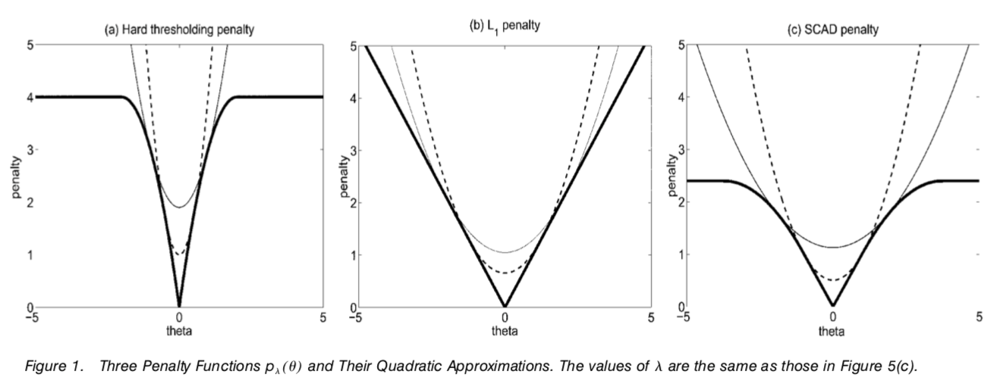
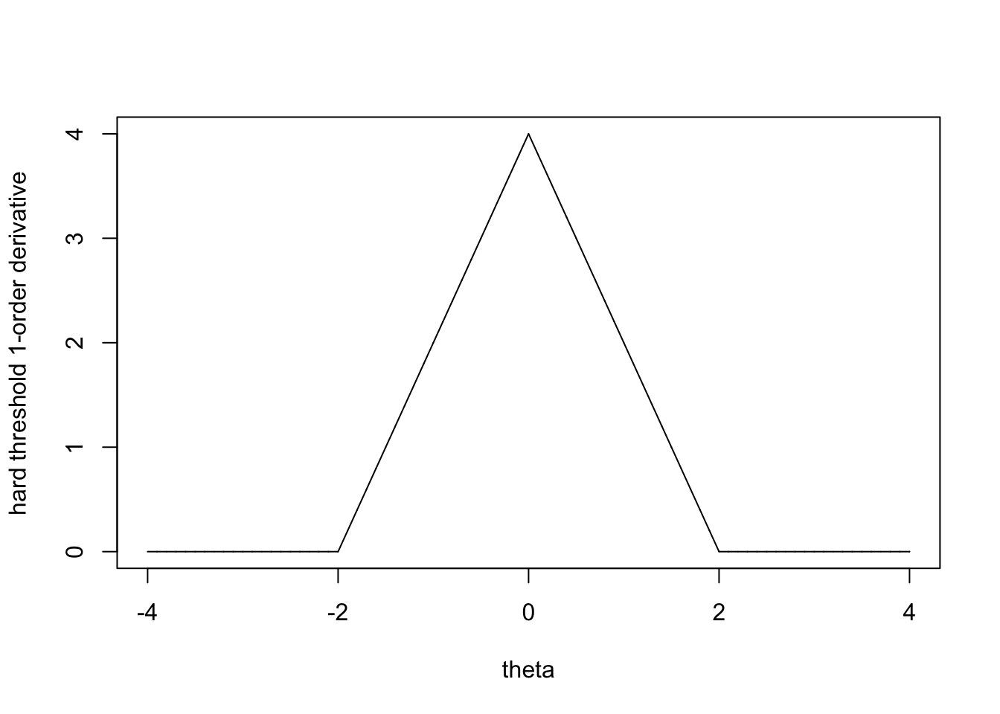
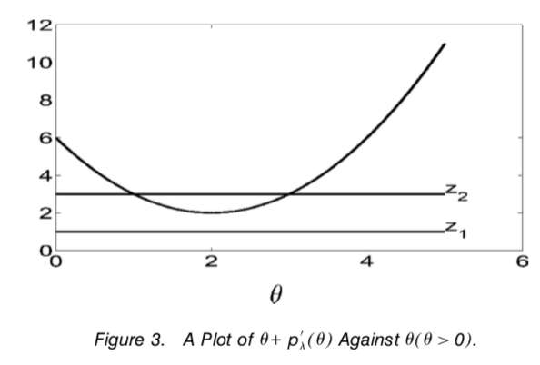

Paper 1 Variable Selection via Nonconcave Penalized Likelihood and its Oracle Properties
Fan and Li (2001)
1.1 Abstract:
Variable selection，stepwise selection方法的计算昂贵，并且在选择过程中没有考虑到随机误差。这篇文章则考虑使用罚似然函数penalized likelihood 方法去解决这几个问题。选择变量和估计参数同时进行。同时构造估计参数的置信区间。该方法独特的地方在于罚函数是symetric, nonconcave on \((0,\infty)\). 本文还提出了一种关于penalized likelihood function的优化算法。这种算法可以广泛的用于各类模型。比如非参模型小波和样条。同时也提出了收敛速率相关的理论。还介绍了这个方法的oracle property。
1.2 Introduction
变量选择很重要blablabla。传统方法（step-wise）方法有很多问题。罚最小二乘可以同时保持子集选择方法和岭回归的有点。罚函数需要有在原点奇异性使得有稀疏的解(The penalty functions have to be singular at the origin to produce sparse solutions.)，还得满足一定的条件使得模型连续，为了保持模型选择的稳定性。(to satisfy certain conditions to produce continuous models, for staility of model selection)、而且得有界up to a constant使得对于一些大参数的估计是几乎无偏的。 罚函数的前辈ridge regression和 lasso不完全满足这几项条件。 罚最小二乘可以自然的推广到似然函数基础的模型上。 对带有罚的高维目标函数做优化是一个非常难的问题。本文提出了一个新的并且广泛的算法能产生unified variable selection procedure. 估计的标准差用一个sandwitch formula得到。
罚函数相对于传统的step-wise方法来说，可以建立样本性质，比如收敛速度，oracle procedure。也就是说，如果真实的参数为0，则估计值为0的概率趋向于1.
penalized likelihood 方法可以推广到高维的非参模型，通过使用wavelet和splines逼近回归函数。传统的sub-set selection方法在非参中是选择合适的样条的subbases。这些data-driven的变量选择方法的大样本性质很难理解。但是用penalized likelihood方法就很好建立大样本性质理论。
- Section 2 Relation between penalized least squares & subset selection when matrices are orthonormal
- Section 3 Extend penalized likelihood approach to various parametric regression, lm, rlm. glm. Asymoptotic property. 3.3: Based on local quadratic approximations, find the estimator for penalized likelihood.
The main reason I read this, the local quadratic approximation
- Section 4 Numerical comparision and simulation studies
- Section 5 More discussion
- Appendix: Technical proofs.
1.3 Penalized Least Squares And Variable Selection
Linear Regression Model: \[ \mathbf{y}=\mathbf{X} \boldsymbol{\beta}+\boldsymbol{\varepsilon} \] LSE \[ \|\mathbf{y}-\mathbf{X} \boldsymbol{\beta}\|^{2} \] equivelent to \[ \|\hat{\boldsymbol{\beta}}-\boldsymbol{\beta}\|^{2} \] penalized least square: \[ \begin{array}{r}{\frac{1}{2}\|\mathbf{y}-\mathbf{X} \boldsymbol{\beta}\|^{2}+\lambda \sum_{j=1}^{d} p_{j}\left(\left|\boldsymbol{\beta}_{j}\right|\right)=\frac{1}{2}\|\mathbf{y}-\hat{\mathbf{y}}\|^{2}+\frac{1}{2} \sum_{j=1}^{d}\left(z_{j}-\beta_{j}\right)^{2}} \\ {+\lambda \sum_{j=1}^{d} p_{j}\left(\left|\beta_{j}\right|\right)}\end{array} \] with \(\mathbf{z}=\mathbf{X}^{T} \mathbf{y}\) and \(\hat{\mathbf{y}}=\mathbf{X} \mathbf{X}^{T} \mathbf{y}\).
\(p_j\) 不一定对所有j都一致。（可以加个权甚至把对重要j的减为0）
但是以下我们假设一致。
minimizing the previous PLS problem is equivelant to \[ \frac{1}{2}(z-\theta)^{2}+p_{\lambda}(|\theta|) \]
By taking hard thresholding penalty(!!! 这个在lasso里面提过) \[ p_{\lambda}(|\theta|)=\lambda^{2}-(|\theta|-\lambda)^{2} I(|\theta|<\lambda) \]
hard thresholding rule: \[ \hat{\theta}=z I(|z|>\lambda) \] 在这种情况下，正巧和best subset selection and stepwise deletion and addition for orthonormal designs的一致。Hard thresholding penalty function is a smoother penalty function than the entropy penalty \(p_{\lambda}(|\theta|)=\left(\lambda^{2} / 2\right) I(|\theta| \neq 0)\).
一个好的penalty function应该有如下性质
- Unbiasedness,无偏或者近似无偏
- Sparsity,自动把参数很小的变量设为0进而降低模型复杂度
- Continuity 估计对于数据z连续，避免模型预测时的不稳定(?)
对于hard thresholding penalty，如下图可见，当\(|\theta|<\lambda\)时，罚函数是从0到\(\lambda^2\)，也就是在这个范围内，“鼓励”\(\theta\)取0，但是当\(|\theta|\geq \lambda\)时，penalty是一样的，所以不会对likelihood的估计造成影响。
lambda=2
theta=seq(-4,4,0.001)
p_hard=lambda^2-(abs(theta)-lambda)^2*as.numeric(abs(theta)<lambda)
plot(theta,p_hard,type='l',ylab="hard threshold penalty")
PLS关于\(\theta\)的一阶导是\(\operatorname{sgn}(\theta)\left\{|\theta|+p_{\lambda}^{\prime}(|\theta|)\right\}-z\) ,其中, \(p'(\theta)=I(|\theta|<\lambda) sign(\theta)\cdot2(|\theta|-\lambda)\)当\(\theta\)很大的时候,\(p'(\theta)\)=0.当\(|z|\) 足够大的时候，估计值就是\(\hat\theta=z\) 所以说approximately unbiased estimator. 此时，“\(p'(|\theta|)=0\) for large \(|\theta|\)” 就是无偏性的一个充分条件。就类似于Bayes selection中的一个improper prior.(？？？为啥，improper prior的定义不是不是分布的prior吗，和导数为0有什么关系？)
结果得到的估计量是一个阈值条件(thresholding rule)的充分条件是 the minimum of the function \(|\theta|+p'_{\lambda}(|\theta|)\) is positive. When \(|z|<\min _{\theta \neq 0}\left\{|\theta|+p_{\lambda}^{\prime}(|\theta|)\right\}\), then the derivative of PLS is positive for all positive \(\theta\)’s and negative for negative \(\theta\)’s.
因为PLS的一阶是\(\operatorname{sgn}(\theta)\left\{|\theta|+p_{\lambda}^{\prime}(|\theta|)\right\}-z\).
但是在这种情况下，PLS的估计是\(\hat\theta=0\).因为在定义域上\((-\infty,0)\)上PLS函数单减，在\((0,\infty)\)上单增，最小化PLS函数的点就是0.
另外一种情况，当\(|z|>\min _{\theta \neq 0}|\theta|+p_{\lambda}^{\prime}(|\theta|)\)，则Z函数和\(|\theta|+p'_{\lambda}(|\theta|)\)有交叉，也就是存在令导数为0的点。

所以这几根粗的线是不同penalty function的长相，第一张图的意思就是当\(\theta=0\)时，罚函数不罚，当theta超过一定值也不罚。lasso则一直罚，SCAD则更smooth，但是超过一定值也不罚了。
This implies that a sufficient and necessary condition for continuity is that the minimum of the function \(|\theta|+p_\lambda'(|\theta|)\) is attained at 0.
lambda=2
theta=seq(-4,4,0.001)
p_der=-as.numeric(abs(theta)<lambda)*2*(abs(theta)-lambda)
plot(theta,p_der,type='l',ylab = "hard threshold 1-order derivative")
#lines(theta,rep(1,8001),type='l')观察PLS关于\(\theta\)的一阶导，当\(|z|<\min _{\theta \neq 0}\left\{|\theta|+p_{\lambda}^{\prime}(|\theta|)\right\}\) 时，一阶导的符号与\(\theta\)一致，+ if \(\theta>0\),- if \(\theta<0\).这样\(\hat\theta=0\)。 而当\(|z|>\min _{\theta \neq 0}|\theta|+p_{\lambda}^{\prime}(|\theta|)\) 时，（可能？）存在两个跨越点。

其中，大的那个点是PLS的estimator。这样，为了保证\(\hat\theta\)关于\(z=\min _{\theta \neq 0}\left\{|\theta|+p_{\lambda}^{\prime}(|\theta|)\right\}\) 左右连续，所以\(|\theta|+p_{\lambda}^{\prime}(|\theta|)\) 应该在0点取得
可以断言，满足稀疏性和连续性条件的penalty 函数必须在origin点singular。
- \(L_2\) penalty \(p_{\lambda}(|\theta|)=\lambda|\theta|^2\)-> ridge regression
- \(L_1\) penalty \(p_{\lambda}(|\theta|)=\lambda|\theta|\) yields a soft thresholding rule and lasso \[ \hat{\theta}_{j}=\operatorname{sgn}\left(z_{j}\right)\left(\left|z_{j}\right|-\lambda\right)_{+} \]
- \(L_q\) penalty \(p_{\lambda}(|\theta|)=\lambda|\theta|^{q}\) -> bridge regression.
然而 The solution is continuous only when \(q\geq 1\). 但是，when \(q>1\), the minimum of \(|\theta|+p'_{\lambda}(|\theta|)\) is zero and hence it does not produce sparse solution. So the only solution is the \(L_1\) penalty family. 但是使用常数\(\lambda\)时，改变\(\lambda\)会有代价。
1.3.1 Smoothly Clipped Absolute Deviation Penalty
因为一般的\(L_q\) 和硬阈值方法不能同时满足无偏，稀疏和连续性。定义一个连续可微的penalty: \[ p_{\lambda}^{\prime}(\theta)=\lambda\left\{I(\theta \leq \lambda)+\frac{(a \lambda-\theta)_{+}}{(a-1) \lambda} I(\theta>\lambda)\right\} \] for some \(a>2\) and \(\theta>0\). This is called SCAD penalty. 这是二次样条，其端点是\(\lambda\)和\(a\lambda\).结果如下 \[ \hat{\theta}=\left\{\begin{array}{ll}{\operatorname{sgn}(z)(|z|-\lambda)_{+},} & {\text { when }|z| \leq 2 \lambda} \\ {\{(a-1) z-\operatorname{sgn}(z) a \lambda\} /(a-2),} & {\text { when } 2 \lambda<|z| \leq a \lambda} \\ {z,} & {\text { when }|z|>a \lambda}\end{array}\right. \]
估计的阈值由\(\lambda\)和\(a\)决定。 在Bayes risk analysis中，prior for \(\theta\) is \(N(0,a\lambda)\). Compute Bayes risk via numerical integration.
1.3.2 Performance of Thresholding Rules
怎么突然转去讲risk anaysis了。。。 Compare between \(L_2\) risk function, hard and soft thresholding rules with SCAD.
1.4 Variable selection via penalized likelihood
Assume design matrix \(X=(x_{ij})\) is standardized.(mean 0 and variance 1).
1.4.1 Penalized Least Squares and Likelihood
Penalized least squares: \[ \frac{1}{2}(\mathbf{y}-\mathbf{X} \boldsymbol{\beta})^{T}(\mathbf{y}-\mathbf{X} \boldsymbol{\beta})+n \sum_{j=1}^{d} p_{\lambda}\left(\left|\beta_{j}\right|\right) \]
We can consider alternative loss function Huber’s \(\psi\) function, which is more numerical stablize than least squares,that is, we minimizing
\[ \sum_{i=1}^{n} \psi\left(\left|y_{i}-\mathbf{x}_{i} \boldsymbol{\beta}\right|\right)+n \sum_{j=1}^{d} p_{\lambda}\left(\left|\beta_{j}\right|\right) \] For generalized linear model, penalized likelihood is \[ \sum_{i=1}^{n} \ell_{i}\left(g\left(\mathbf{x}_{i}^{T} \boldsymbol{\beta}\right), y_{i}\right)-n \sum_{j=1}^{d} p_{\lambda}\left(\left|\beta_{j}\right|\right) \] equivelent to minimize its multiple with -1.
1.4.2 Sampling properties and oracle properties.
先跳过，以后再看。
1.4.3 A new Unified Algorithm
A new unified algorithm for monimizing the problem:1. penalized linear square. 2.penalized Huber \(\psi\) function 3.Generalised linear model.
Denote first term of these problem as a loss function of \(\boldsymbol \beta\), as \(\ell(\beta)\). Then the problem can be rewrite as the form:
\[ \ell(\boldsymbol{\beta})+n \sum_{j=1}^{d} p_{\lambda}\left(\left|\beta_{j}\right|\right) \] 为了解这个优化问题，可能会涉及二阶导以及Hessian阵一类的问题。但是\(L_1\),硬阈值，SCAD都没有连续的二阶导，但是这些罚函数可以被locally approximated by a quadratic function.假设从初值\(\boldsymbol \beta_0\) 开始迭代，如果对于某个\(\beta_{j0}\) 非常靠近0，则设置\(\hat\beta_j=0\)。否则用二次函数局部逼近： \[ \left[p_{\lambda}\left(\left|\beta_{j}\right|\right)\right]^{\prime}=p_{\lambda}^{\prime}\left(\left|\beta_{j}\right|\right) \operatorname{sgn}\left(\beta_{j}\right) \approx\left\{p_{\lambda}^{\prime}\left(\left|\beta_{j 0}\right|\right) /\left|\beta_{j 0}\right|\right\} \beta_{j} \] when \(\beta\neq0\),则有 \[ \begin{array}{r}{p_{\lambda}\left(\left|\beta_{j}\right|\right) \approx p_{\lambda}\left(\left|\beta_{j 0}\right|\right)+\frac{1}{2}\left\{p_{\lambda}^{\prime}\left(\left|\beta_{j 0}\right|\right) /\left|\beta_{j 0}\right|\right\}\left(\beta_{j}^{2}-\beta_{j 0}^{2}\right)} \\ {\text { for } \beta_{j} \approx \beta_{j 0}}\end{array} \] 二次逼近的缺点是一旦coefficient被压缩到0，将一直停留在0点。 penalized maximum likelihood的问题可以等价的编程二次型最小值的问题，并且能用Newton-Raphson算法进行求解。 \[ \begin{array}{r}{\ell\left(\boldsymbol{\beta}_{0}\right)+\nabla \ell\left(\boldsymbol{\beta}_{0}\right)^{T}\left(\boldsymbol{\beta}-\boldsymbol{\beta}_{0}\right)+\frac{1}{2}\left(\boldsymbol{\beta}-\boldsymbol{\beta}_{0}\right)^{T} \nabla^{2} \ell\left(\boldsymbol{\beta}_{0}\right)\left(\boldsymbol{\beta}-\boldsymbol{\beta}_{0}\right)} \\ {+\frac{1}{2} n \boldsymbol{\beta}^{T} \Sigma_{\lambda}\left(\boldsymbol{\beta}_{0}\right) \boldsymbol{\beta}}\end{array} \]
于是就得到更新过程如下： \[ \boldsymbol{\beta}_{1}=\boldsymbol{\beta}_{0}-\left\{\nabla^{2} \ell\left(\boldsymbol{\beta}_{0}\right)+n \Sigma_{\lambda}\left(\boldsymbol{\beta}_{0}\right)\right\}^{-1}\left\{\nabla \ell\left(\boldsymbol{\beta}_{0}\right)+n \mathbf{U}_{\lambda}\left(\boldsymbol{\beta}_{0}\right)\right\} \] with \[ \begin{array}{l}{\nabla \ell\left(\boldsymbol{\beta}_{0}\right)=\frac{\partial \ell\left(\boldsymbol{\beta}_{0}\right)}{\partial \boldsymbol{\beta}}, \quad \nabla^{2} \ell\left(\boldsymbol{\beta}_{0}\right)=\frac{\partial^{2} \ell\left(\boldsymbol{\beta}_{0}\right)}{\partial \boldsymbol{\beta} \partial \boldsymbol{\beta}^{T}}} \\ {\Sigma_{\lambda}\left(\boldsymbol{\beta}_{0}\right)=\operatorname{diag}\left\{p_{\lambda}^{\prime}\left(\left|\boldsymbol{\beta}_{10}\right|\right) /\left|\beta_{10}\right|, \ldots, p_{\lambda}^{\prime}\left(\left|\beta_{d 0}\right|\right) /\left|\beta_{d 0}\right|\right\}}\\ \mathbf{U}_{\lambda}\left(\boldsymbol{\beta}_{0}\right)=\Sigma_{\lambda}\left(\boldsymbol{\beta}_{0}\right) \boldsymbol{\beta}_{0} \end{array} \]
当算法收敛的时候，estimator \(\hat\beta\)满足如下条件 \[ \frac{\partial \ell\left(\hat{\boldsymbol{\beta}}_{0}\right)}{\partial \beta_{j}}+n p_{\lambda}^{\prime}\left(\left|\hat{\beta}_{j 0}\right|\right) \operatorname{sgn}\left(\hat{\beta}_{j 0}\right)=0 \]
如下的sandwich formula 可以作为对\(\hat\beta_1\)的估计: \[ \begin{aligned} \widehat{\operatorname{cov}}\left(\hat{\boldsymbol{\beta}}_{1}\right)=\left\{\nabla^{2} \ell\left(\hat{\boldsymbol{\beta}}_{1}\right)+n \Sigma_{\lambda}\left(\hat{\boldsymbol{\beta}}_{1}\right)\right\}^{-1} \widehat {\operatorname{cov}}\left\{\nabla \ell\left(\hat{\boldsymbol{\beta}}_{1}\right)\right\} \\ \times\left\{\nabla^{2} \ell\left(\hat{\boldsymbol{\beta}}_{1}\right)+n \Sigma_{\lambda}\left(\hat{\boldsymbol{\beta}}_{1}\right)\right\}^{-1} \end{aligned} \]
References
Fan, Jianqin, and Runze Li. 2001. “Variable selection via nonconcave penalized likelihood and its oracle properties.” Journal of the American Statistical Association, December.